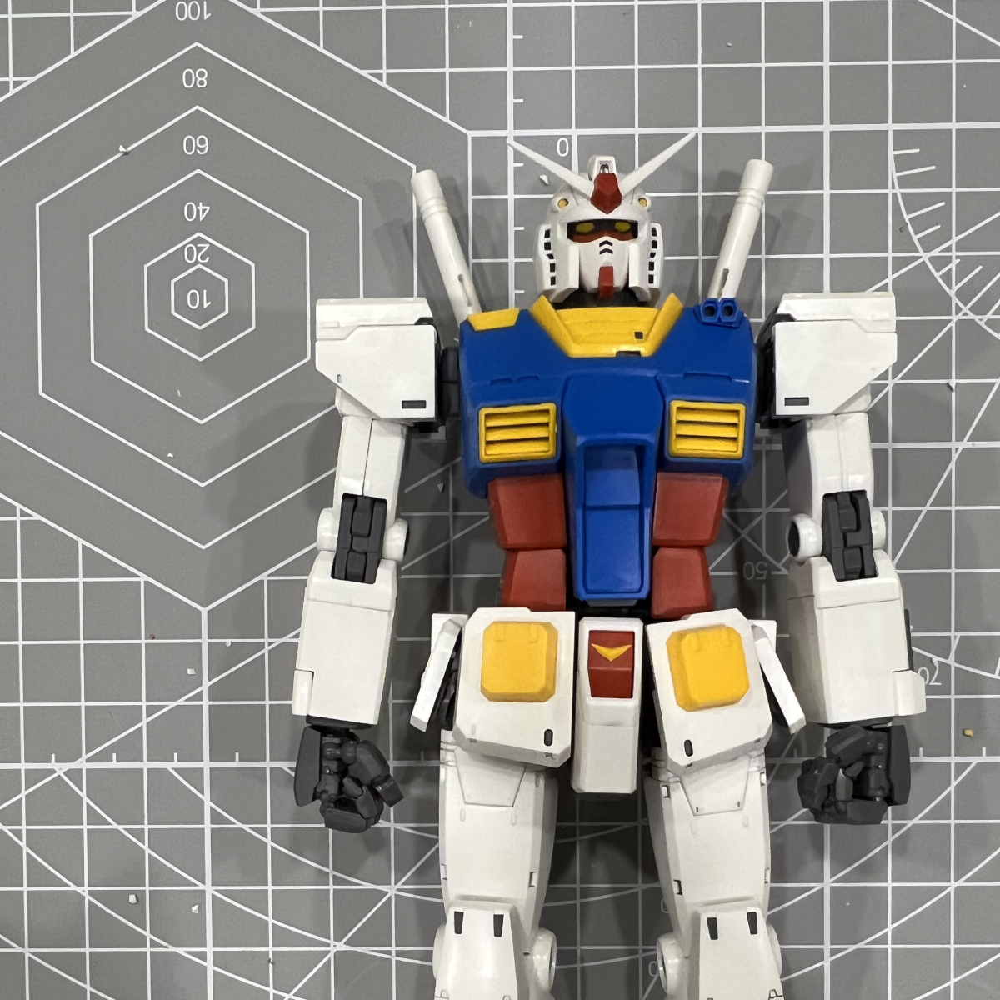

Yankun Wang
Senior product designer · San Francisco
Field notebook · Vol. V
2020–2026
Email ↗
Résumé · PDF ↗
About
Outside

Building
Yogurt
lift the cover
 Outside
Outside YogurtOutsideYogurt
YogurtOutsideYogurt